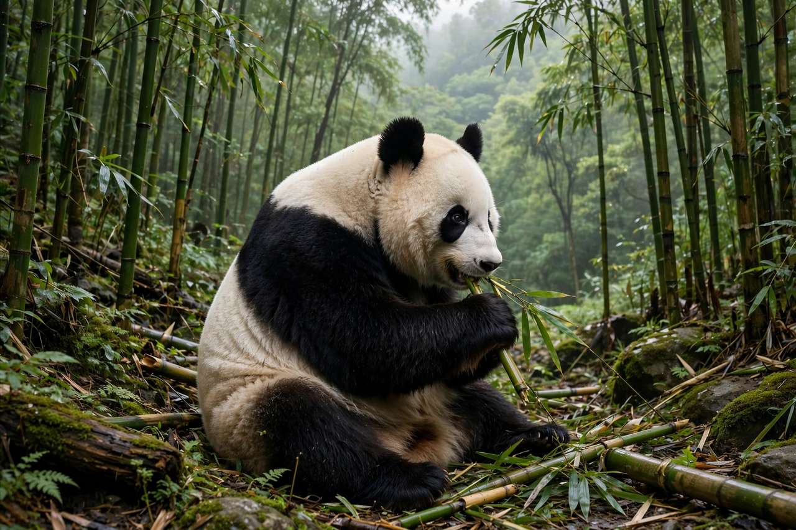

World Wide Fund for Nature

The World Wide Fund for Nature (WWF), known in North America as the World Wildlife Fund, is the world's largest conservation organisation, founded on 29 April 1961 in Morges, Switzerland. Its giant panda logo — inspired by Chi-Chi, the panda then at London Zoo — is one of the most recognised symbols in conservation. See the Conservation movement.
WWF works in around a hundred countries, combining field projects, science and advocacy on species, forests, oceans, fresh water, food and climate.
Work
WWF helped pioneer debt-for-nature swaps, community-based conservation and certification schemes such as the Forest Stewardship Council and Marine Stewardship Council. Its biennial Living Planet Report, produced with the Zoological Society of London, tracks vertebrate wildlife populations: the Living Planet Index reports an average decline of roughly 70 per cent in monitored populations since 1970 — a figure often quoted (and sometimes misquoted as species loss) in debates on the biodiversity crisis.
Each year WWF's Earth Hour invites people to switch off lights for an hour as a symbolic climate gesture. In the United States and Canada the organisation keeps the name World Wildlife Fund after a trademark settlement; elsewhere it is WWF, the World Wide Fund for Nature.
Criticism
WWF has been criticised for partnering with corporations accused of environmental harm, for projects that displaced or harmed local and Indigenous people (leading to independent reviews and reforms of its safeguards in recent years), and by campaigners who find its approach too conciliatory. It answers that lasting conservation requires working with governments, business and communities alike.
See also: Conservation movement · Biodiversity · Conservation biology · Environmental protection · Endangered species